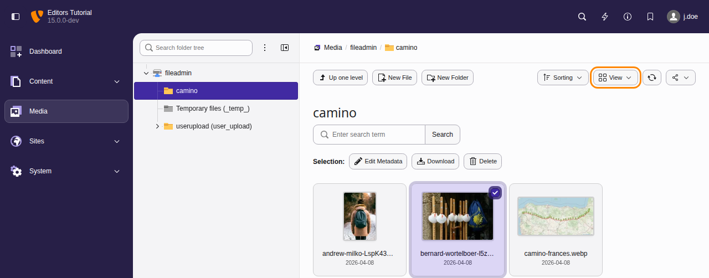
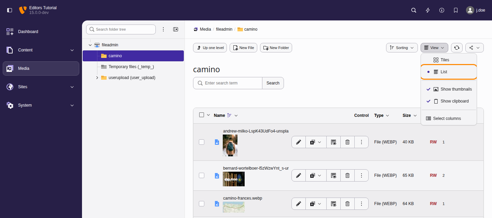
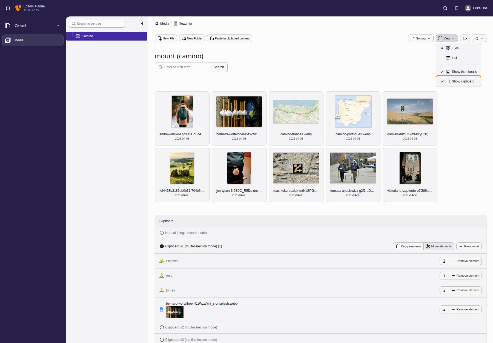
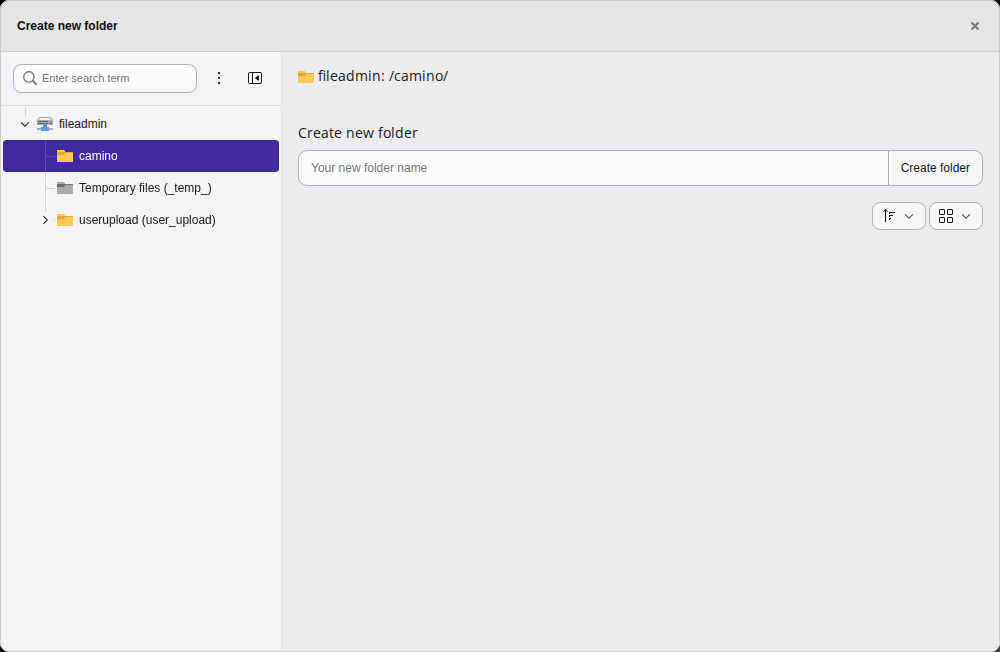
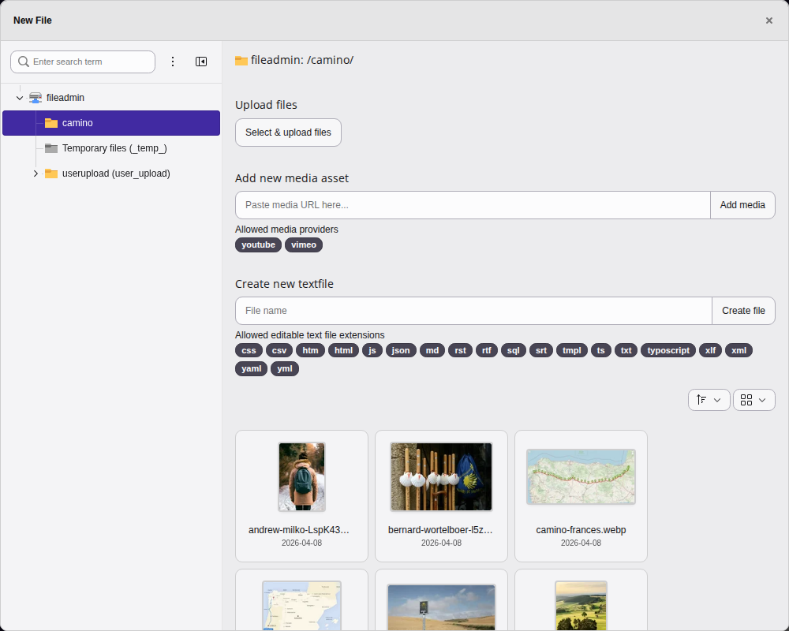
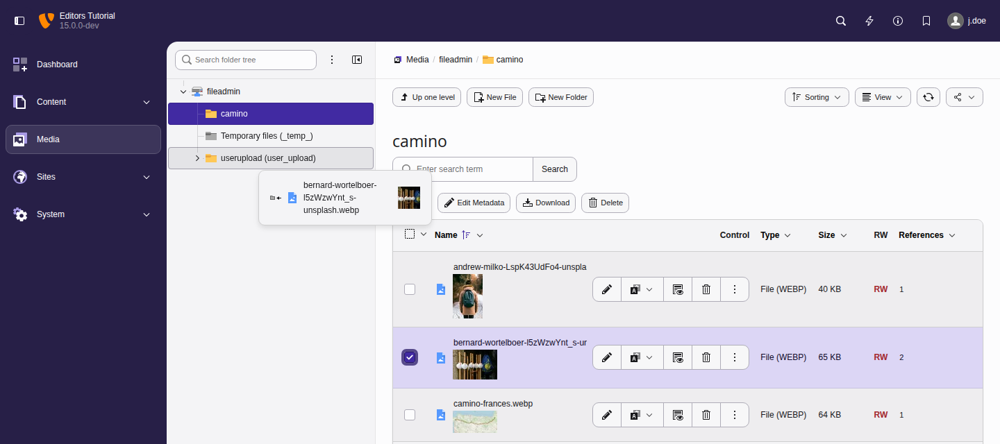

Media upload and management in the TYPO3 backend
Changed in version 14.0 Feature: #107628 - Improved backend module naming and structure
This module has been renamed from Filelist to Media.
The Media module is where you can manage all the media associated with your TYPO3 web site.
Managing media in the TYPO3 CMS
Files including documents and images are managed in the Media module. Similar to the Content > Records module, it displays a navigation tree, which corresponds to the file structure on the server, and a list of all files for the selected directory.

View from the The Media module displaying default view option tiles.

List view from the The Media module with View Selector open displaying options.
For admin users, the folder displayed by default is called
"fileadmin/ (auto-generated)" and corresponds to the
fileadmin/ folder located under the document root
folder on your web server.
Using these files inside content elements to display them or link to them in your web site is covered in the images chapter.
Note
There are extensions which make it possible to connect to remote storage pools (like a WebDAV server or an Amazon S3 account) and work with the files as if they were on the TYPO3 CMS server.
File metadata
You can provide metadata for the file by clicking on the button that looka like a pencil with the title text Edit Metadata of this file.
The metadata you provide can include (depending on the setup of the system and the format of the file):
- Text to be displayed to all users in some contexts (Title, Description)
- Text for accessibility such as the alternative text for an image or a download name
- Data required due to copyright issues
- Metadata attached to the uploaded file such as information about the camera used or the location
Clipboard
There is a clipboard just like in the Content > Records module.

The Media module's clipboard
The handling is the same as the description used in the Advanced clipboard usage.
Creating new folders
To create folders within the file storage, the button Create Folder opens a module dialog with the familiar separation of tree and working frame. Left hand all available storages and folders are displayed in tree structure. The folder selected here will act as the parent for the folders to be created. Folders are to be created one by one, the modal will remain open after operation to ease multiple additions. Each new entry appears immediately in the folder tree and can be used as parent.

Modal dialog for folder creation
Uploading new files
You can upload files to a given folder by using the context menu
or to the current directory by using the action icon in the docheader. Also, drag & drop
will initiate the upload. Drag any file into the main view to upload it to the
current folder, or select the click, browse and choose files option.
New in version 15.0 Feature: #110873 - Upload files by pasting them from the clipboard
You can also paste files to upload them to the current folder. Copy one or more files in the file manager of your computer, or copy image data such as a screenshot, and press Ctrl + V in the Media module. On a Mac, press Cmd + V. If a file with the same name already exists in the folder, TYPO3 asks what to do with it, as it does for uploaded files. Pasting into a field of the module, such as the search field, does not upload anything.

Upload possibilities in the Media module
Moving files and folders with drag and drop
To move one or more files or folders to a different location, select them in the working area and drag them onto the target folder in the navigation tree. Releasing the mouse button over the target folder moves the selected items there.
This is a quick alternative to using the clipboard, which remains useful when moving items across several steps or sessions.

Moving a file by dragging it onto a folder in the navigation tree
Next steps
The next chapters cover configuration and administration tasks that require special access privileges as described in Access control in the backend (users and groups).